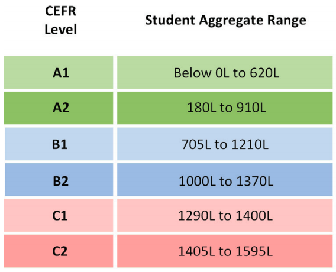

Video Streaming - 8-9pm, Monday - Friday.

CLASS CODE: FEKETN7S

MEETING NUMBER: 577 207 147
If YOU DON'T HAVE WEBEX ...
... you can download the free software at 'www.webex.com' and join our interactive session.
What is a Lexile Level?
A popular method used by schools to measure a student reader’s ability is Lexile level or a Lexile Measure. A Lexile measure is a valuable tool for teachers, parents, and students. It serves two unique functions: it is the measure of how difficult a text is OR a student’s reading ability level. The Lexile Framework was developed by MetaMetrics©, an educational assessment and research team, funded originally by the National Institute of Child Health and Human Development.
What Does Lexile Score Mean?
A student receives his or her Lexile measure from one of two ways: taking a school-administered SRI (Scholastic Reading Inventory) test, which is specifically designed to measure Lexile or reading ability OR by taking a standardized reading test which converts the reader’s results to a Lexile measure. If a student gets a 550L then he or she is a 550 level Lexile reader. 550L is the measure of his or her readability level. It is important to note it is never called a score! This encourages student achievement.
How Can I Know My Lexile Level?
The Lexile level will always be shown as a number with an “L” after it — for example 770L = 770 Lexile. The higher the Lexile measure, the higher the student’s reading level. The reader’s Lexile Framework works in intervals of five with 5L being the lowest. The highest possible measure is 2000L. Anything below 5L is assessed as a BR or Beginning Reader.
How Do I Find the Lexile of a Book?
A book’s Lexile measure is analyzed by MetaMetrics©. After a text is assessed, it is given a measure like that of a student’s readability level, 600L for example. In this measure, MetaMetrics© is assessing the text’s difficulty level. A book or magazine at a 500L has a Lexile Level of 500. MetaMetrics© predicts and assesses how difficult a text will be for a reader to comprehend. The two main criteria it tests are word frequency and sentence strength. A text’s Lexile Framework works in increments of 10 with 10L being the lowest. Measures below 10L are classified as BR or Beginning Reader.
Lexile Levels in Practice.
The ideal for both reader and text is to match both their assessed Lexile measure. For example a book or magazine with a 770L and a reader assessed at a Lexile level of 770. The reading levels per classroom are wide-ranging and varied. There are many factors that go into matching a student to his or her ideal text. The Lexile Framework is a good place to start in picking the right book at the right Lexile level as it targets areas in need of intervention and encourages achievement across grade levels and curricula.
How to Find Books on Your Lexile Level.
Lexile levels are scientifically and mathematically assigned based on the difficulty and readability of a book. Once you know your child’s Lexile level, you can search for books that match this level to expand your home library and encourage daily reading practice in your own home. Use the Lexile database to search by Lexile level, title, or subject to find books your child will enjoy and be able to read without becoming discouraged at his or her reading achievement.
Click on the 'Finding Your Lexile' tab to know your reading level.
CEFR (IELT) and Lexile Comparison.
The Common European Framework of Reference (usually abbreviated to the CEFR or CEF) describes what language learners can do at different stages of their learning.
The CEFR describes six broad levels of ability, with A1 being the lowest and C2 the highest. Learners are classified in three distinct groups: the Basic User (levels A1 and A2), the Independent User (B1 and B2) and the Proficient User (C1 and C2).
The CEFR describes what learners can do across five language skills: Spoken Interaction, Spoken Production, Listening, Reading and Writing.
UK, Australia, USA, Canada, Ireland and New Zealand University applicants require a CEFR level of B1 and above to meet Visa requirements.
欧洲通用参考框架（通常缩写为CEFR或CEF）描述了语言学习者在学习的不同阶段可以做什么。
CEFR描述了六种广泛的能力水平，其中A1最低，C2最高。学习者分为三类：基本用户（A1和A2级），独立用户（B1和B2）和熟练用户（C1和C2）。
CEFR描述了学习者可以通过五种语言技能做什么：口语互动，口语制作，听力，阅读和写作。
英国，澳大利亚，美国，加拿大，爱尔兰和新西兰大学的申请人要求CEFR等级达到B1及以上才能满足签证要求。
Our Schedule (lexile range)
Monday - Level 1 - BR70-10L
Tuesday - Level 2 - BR40-160L
Wednesday - Level 3 - 160L-450L
Thursday - Level 4 - 300L-530L
Friday - Level 5 - 430L-620L
Friday - Level 6 - 530L-850L